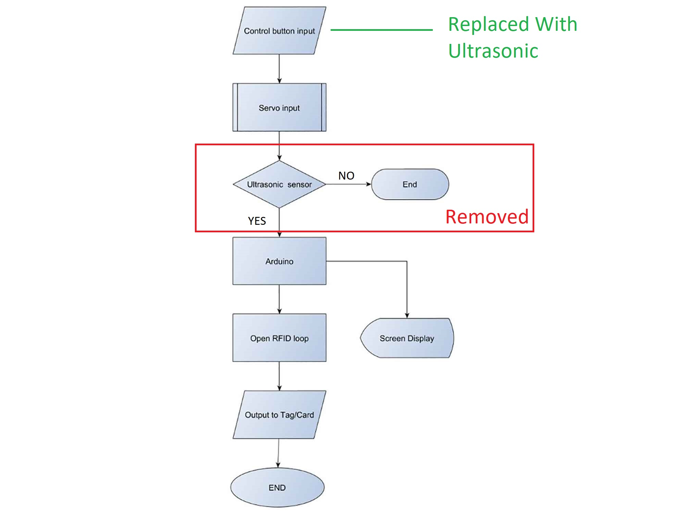

Original files
I
n my project, I'm working on a system which can motivate people dump their wastages on garbage bin instead of throwing it everywhere. people will get points on using it in their RFID card or tag which will be given by the shopkeeper. shopkeeper owns the smart bin. points will be depend on the type ( WET / DRY ) and Amount of the garbage. Those pints can be use for getting discount in respective shop.Smart bin system can also be used in marketing purpose as it contains speaker in controller which address people towards respective shop.
Some Students also tried same concept about this situation.The key idea is to Reward people for making people use Dust-bin
Concept model
This is concept model i designed on week 3.
Timeline
| Task | Time |
|---|---|
| Cad design | 6/4/2019 |
| Assembly matters (joineries) | 12/4/2019 |
| CNC model | 18/4/2019 |
| Board Design | 4/5/2019 |
divided Project on two phases
My final project is to design Interactive Dustbin system. i divided this project in two phases.
in Phase 1 dustbin System will be able to detect presence of individual, will be able to open and close by itself and try to manage the garbage by measuring its quantity inside. This part i am going to do in fab lab , if i will able to complete it earlier i will work on Phase 2, if not i will keep it as my final project.
In Phase 2, I want to make this system for commercial application in which dustbin will be owned by the Shopkeepers and for trusts who manages Historical sites. In that model i am thinking about point system which will give points after use, and those points will give help to give discounts in near by shops.
Why dividing in 2 phases ?
initially my idea was to make One commercial model. One can check the project model on Final project Concept. There i described it on details.Reason to divide in phases is i found i may have the problems regarding the programming the system. i know basics in Arduino C and C programming , but for programming the RFID module will need me more learning time , though i prepared my final board the way i can easily add the RFID - module so if some time left i can work on that also.
Who's done beforehand ?
There are many example where people tried to do automation in dustbin. in some projects they use ultrasonic sensor and the servo to make the opening open or close by detecting disturbance. In one project one used Mic with Arduino and servo, it will detect the sound and open the Opening. he is controlling servo with drivers.
One project is very similar to what i am thinking for phase one. it includes LCD module, Ultrasonic sensor, Infrared sensor with Arduino. They are using Infrared sensor to detect the objects and Ultrasonic sensor to measure the quantity.
Links for all the ideas Are below :
This projects were amazing i gain more clear perspective after watching this videos, But these are personal projects and done for only short of demonstration of system not for public use. What i want to implement here is i want to modify this system for Public use , People will not use/buy it if it is not looking good enough or it not reliable and manufactures will not manufacture if it not convenient for sell or convenient for make.
What will I design?
As i mentioned above i wanted to make one system which is complete or semi-Automated . For phase one i am making it complete Automated , i this Ultrasonic sensor will detect for disturbance or object continuously , When it will detect objects in between some distance it will triggers the Motor to open the dustbin..
For phase - 2 i will like to make it semi-automatic. i will not give power continuously to the Ultrasonic instead i will add one push button for the people so system can start , it is more convenient idea for me for the commercial use.
Initial designs For the Smart bin
First Picture
Below image was first picture of what i wanted to make in final project. i wanted to make wireless communication between dustbin and main controller. if some one push the button dust bin will open , after throwing trash bin will give points using RFID - module.
Full description is here.

Flow chart
This is complete algorithmic description. I divided This in two Phase. Reason i added Arduino here because i didn’t know i will able to make my one !. i made my new board which is able to be programmed like Arduino. board has AT mega 328p microcontroller. i have uploaded my board design after Cad part below.


Some research in joineries
Apart from renders i started thinking about how my real dustbin will look like and how its joinery will be i wanted to do try some wood joinery on the dustbin specially Japanese joineries , i started doing some research one wood dustbins and possible joints i can use in project.
At beginning i went for standard joinery which are used in woods. below are some examples !
Butt joints

These are just two pieces of wood attached perpendicularly to each other, often with nails or screws. They can be perfectly good joints but will have no structural integrity on their own.
Butt joints can be your go-to when the work is rough or rustic or when speed matters more than looks. Just make sure your joining technique is right for the job (you might also need a metal corner bracket for extra strength, for instance). To dress up a butt joint you can either countersink or plug your nail/screw holes.
Pocket screws
These are just two pieces of wood attached perpendicularly to each other, often with nails or screws. They can be perfectly good joints but will have no structural integrity on their own.
Butt joints can be your go-to when the work is rough or rustic or when speed matters more than looks. Just make sure your joining technique is right for the job (you might also need a metal corner bracket for extra strength, for instance). To dress up a butt joint you can either countersink or plug your nail/screw holes.
Biscuit screws

This method involves gluing wooden “biscuits” into slots cut into the wood. It's an excellent way to hold together pieces of plywood or other engineered material, providing plenty of gluing surface as well as the strength of the biscuits themselves.
Biscuits are good for casework and for reinforcing and lining up edge joints, but layout can be confusing until you get the hang of it.
Miter joints
I'm including miters here because on their own they are only as strong as the glue holding them together. They have more glue surface than a straight butt joint — a plus. But the joint is still end grain, which is notorious for not taking glue well.
Thanks to the super strength of new glues, a small box made only with miters will usually hold just fine. Still, adding a spline is a good idea.
Miters with splines look nice, so the joint itself can add to the design. The biggest negative is weakness. You will also need to take extra time to set the joint up properly so it has no gaps.
finger joints
This a good example of a ‘finger’ or ‘comb’ joint. It is ideal for box constructions and is suitable for use with natural woods such as pine and mahogany or even manmade boards such as plywood and MDF. The joint is strong especially when used with a good quality glue such as PVA (woodworkers adhesive).
If the joint is cut accurately the ‘fingers should fit together without any gaps and the glue ensures that they are virtually indestructible. They are used for a wide range of products including jeweler boxes, cabinet construction, kitchen cupboards and many others. (Example below - a box containing an electronic game for a young child - notice the finger joints).
image source
i decided to go for finger joint first , Reason i want to work with finger joint first because of its Simplicity and it is believed ideal for box making , i also want to try out Biscuit joint as well , i am thinking about testing possible joineries so i can have better idea in my design.
Sources
Cad designs
For now i am working on my cad model which can be used in real world. below is first test cad model i made it was not fully7 parametric though , giving some errors while changing the dimensions so i made another one which was more robust.
First Cad
Second Cad
Second cad design i made was more robust for me , hard to break constrains. then i started adding sections on it , i made it two layered so , no matter what type of garbage it is , it will stay away from main system and wiring.
fabrication of First mechanism
After completing the Cad model i started Fabricating my components , i begin with #d Printing parts.
3d Printed parts
Servo mount
I designed Servo mount for Tianko - MG995 180 degree servo. its designed the way its lags go between the slots of 6 mm MDF laser sheet and hold the serrvo by friction !
Design of shaft holders
it will keep the Shaft align with Servos Center o Rotation Axes.
Little demp of their placement on bottom
3D printed Hinges
Initially i don’t want to use any mechanical part on the system , i wanted all my joineries laser cut or 3d printed. so i designed this hinge which will take up the flapper
Slider
Slot
Demo
It will be something like this !
Laser cut panels for test
Below The middle Panel
Below two pictures Explains servo mounting Below the middle panel ! one can also see on cad model !
Demo Assembly
Mechanism test without Flapper
It worked as i assumed Without Flapper , so mechanism can work !
Failure when Flapper is Attached
But ... But ... But ... , it failed when i attached Flapper !
Failure
After First Mechanism failed , i started working on the new mechanism , i knew servo was capable enough to lift the 3 mm MDF flapper , i had idea of servos load capacity , somehow i made some mistake somewhere .
Failure Reasons
Solution
Fabrication of second Mechanism
3d Design printed parts
Modified servo mount
I modified servo mount by increasing its length , so servo horn do not touch Panels
Flapper mechanism
Flapper mechanism will directly connect the Servo to the Flapper. it also looks like 'One' - One element.Servo mounts placement
Laser Cutting of Final Panels
After confirming Servo mount is good in its position i started laser cutting Final PanelsFront outer panel
In front Outer panel, ultrasonic sensor mounted below position where i though it will get maximum surface of Human legs to detect ! and Behind RFID tag , RFID reader is mounted !
Back Section
in Back section , there is little space in between servo will be fitted , it is very strong solution for servo mounting , learned Hard way from machine design.
Front inner section
Space where dump will be thrown in.
Final Clicks
Mechanism testing Video
Electronics Part
Board Modifications
As i talked about my final board in week 11 and week 16 i gave two power supplies to my board and i though RFID needs only SPI pins i was not sure it will need two PWM Pins for communicate and need to have 3.3 power supply.
i was told that this two extra Pins can be any Extra PWM pins and standard PWM pins which are connected to RFID are 9(rst) and 10(ss), this pins where nearer to SPI header , so i made one shield which will connect this pins and connected 1117 regulator. to vcc of RFID pin. br>
Below is Images of Wiring and Glow it is making , its above RED and GREEN led making it beautiful.
Final Code
I Have Explained Final Code in comments Below , In summary i am working with Servo, Ultrasonic sensor, and RFID module. I thought something like below image in initial thinking and most of it i am able to achieve so far , yes Things like Displays i would like to use on bigger model and i replaced input to Ultrasonic sensor to give more Automation. but i couldn’t use second ultrasonic system so far. problem Was i couldn’t understand how i will trigger the RFID module by giving some instance ultrasonic value , because dump will be triggered by inner ultrasonic at instance and as user i can throw dump and use tag at same time , i knew it may have some solution but as a time constraints , i went for less promising solution.Initial thinking

Solution was Delay
Freezing the system for Five minutes after one regarding was solution. I triggered Rfid module automatically after servo code is finish , Code executes from top to bottom and it will freeze for Five minutes. So user will not cheat to get points !
Testing RFID code
#pragma GCC optimize ("O2")
// for opti,ization of code
#include <SPI.h> // For SPI Pins add spi library
#include <MFRC522.h> // for setting RFID interface add MRFC522 library
#include <Ultrasonic.h> // for ultrasonic Add ultrasonic library
#include <Servo.h> // add servo library
Servo myservo; // define servo
Ultrasonic ultrasonic(A4, A5) ; // define (trig,echo)
int pos = 160; // defined initial position of servo
int distance; // defined distance for ultrasonic
// setting up interface for (PWM pins needed) for RFID , it will help in communicate
#define SS_PIN 10 //RX slave select
#define RST_PIN 9 // rst pin
MFRC522 mfrc522(SS_PIN, RST_PIN); // Create MFRC522 instance.
String card_ID=""; //card UID
//Add as many cards you want
String Name1="14710721526";//first UID card
String Name2="21799093";//second UID card
String Name3="8159175206";//third UID card
String Name4="13937143185";//fourth UID card
String Name5="2174114201";// fifth UID
String Name6="254161178115";//and so on.
// Arrays to run rfid LOOP
int NumbCard[6];//the number of cards. in my case I have 6 cards.
int j=0; //increased by one for every user you add
int statu[6];//the number of cards. in my case I have 6 cards.
int s=0; //increased by one for every user you add
String Name;//user name
long Number;//user number
String ExcelName="Logs"; // given names
int L=0;
int n ;//The number of card you want to detect (optional)
int ID=1;
void setup() {
myservo.attach(5); // servo pin
Serial.begin(9600); // Initialize serial communications with the PC
SPI.begin(); // Init SPI bus
mfrc522.PCD_Init(); // Init MFRC522 card
// for excel sheet
Serial.println("CLEARSHEET"); // clears starting at row 1
Serial.println("LABEL,ID,Date,Name,Number,Card ID,Time IN");// make four columns (Date,Time,[Name:"user name"],[Number:"user number"])
delay(200);
}
void loop() {
// Pass INC as a parameter to get the distance in inches
distance = ultrasonic.read(); // getting distance
//Serial.println("distance : ");
if(distance>70 && distance<80) // and condition , if Distance is between 70 and 80 cm , servo will open
{
for (pos = 160; pos >= 80; pos -= 1) { // goes from 160 degrees to 0 degrees
myservo.write(pos); // tell servo to go to position in variable 'pos'
delay(15);
}
delay(2000); // Flapper will open for 2 sec ,
for (pos = 80; pos <= 160; pos += 1) { // goes from 0 degrees to 160 degrees
// in steps of 1 degree
myservo.write(pos); // tell servo to go to position in variable 'pos'
delay(15);
}
}
else
{
myservo.write(160); // default position
}
// servo code ends now
// RFID code will run now
//look for new card , if card is not detected , code will return to loop start
if ( ! mfrc522.PICC_IsNewCardPresent()) {
return;//got to start of loop if there is no card present
}
// Select one of the cards // if card serial returns 0 then it will return to start of the loop
if ( ! mfrc522.PICC_ReadCardSerial()) {
return;//if read card serial(0) returns 1, the uid struct contains the ID of the read card.
}
for (byte i = 0; i < mfrc522.uid.size; i++) { // for running the loop equal to the card id
card_ID += mfrc522.uid.uidByte[i]; // getting the card id
}
Serial.println(card_ID); //Uncomment this line to scan the card ID and appear it on Serial monitor.
if(card_ID==Name1){
Name="Dhruv Patel";//user name
Number=1;//user number
j=0;//incresd by one for every user you add
s=0;//++1
}
else if(card_ID==Name2){
Name="Maharshi solanki ";//user name
Number=2;//user number
j=1;//++1
s=1;//++1
}
else if(card_ID==Name3){
Name="cido3";//user name
Number=789101;//user number
j=2;//++1
s=2;//++1
}
else if(card_ID==Name4){
Name="cido4";//user name
Number=789101;//user number
j=3;//++1
s=3;//++1
}
else if(card_ID==Name5){
Name="cido5";//user name
Number=789101;//user number
j=4;//++1
s=4;//++1
}
else if(card_ID==Name6){
Name="cido6";//user name
Number=789101;//user number
j=5;//incresd by one for every user you add
s=5;//++1
}
else{ // code will jump below two loops is no conditions is fulfilled , suppose user is new or forgot to register
goto cont;
}
if(NumbCard[j] == 1 && statu[s] == 0){
statu[s]=1;
NumbCard[j] = 0;
Serial.print("DATA,");//send the Name to excel
Serial.print(ID); // local ID
Serial.print(",");
Serial.print("DATE");
Serial.print(",");
Serial.print(Name); // Name of User
Serial.print(",");
Serial.print(Number); //send the Number to excel
Serial.print(",");
Serial.print(card_ID); //send the card ID to excel
Serial.print(",");
Serial.print("TIME");
Serial.print(",");
Serial.println("");
ID=ID+1;
n++;//(optional)
}
else if(NumbCard[j] == 0){
NumbCard[j] = 1;
statu[s]=0;
Serial.print("DATA,");//send the Name to excel
Serial.print(ID);
Serial.print(",");
Serial.print("DATE");
Serial.print(",");
Serial.print(Name);
Serial.print(",");
Serial.print(Number); //send the Number to excel
Serial.print(",");
Serial.print(card_ID); //send the card ID to excel
Serial.print(",");
Serial.print("TIME");
Serial.print(",");
Serial.println("");
delay(30);
ID=ID+1;
}
delay(1000);
cont:
delay(1000);
card_ID="";
//if you want to close the Excel when all card had detected and save Excel file in Names Folder. (optional)
//
//if(n==4){
// ExcelName +=L;
// L++;
// Serial.print("SAVEWORKBOOKAS,");
// Serial.print("Names/");
// Serial.println(ExcelName);
// //Serial.println("FORCEEXCELQUIT");
// Serial.println("CLEARDATA");
// n=0;
// ID=1;
// ExcelName="Logs";
// }
delay(5000); // System will be Freeze for 5 sec
}
RFID and PLX-DAQ
i Prepared the code to geth the data of the RFID tag but it should be represents in shopkeepers Data base for point system , i was finding that solution eith code and i Got one , i used PLX-DAQ interface which takes data via COM ports by which any Serial Data Transfer device is connected and Arranges it on Columns of the Excel sheet !I Suggest one to download PLX-DAQ version 2. first version has limited com ports so option for needed com port may not be there , in second one, one can write com ports number ! For my case i needed wireless device and it should be easily connect with Computers i choose Bluetooth for That !
Interface of Shopkeepers : Excel
Final project Video
Slide

Conclusion
It is last time I am typing any Conclusion regarding My weeks ! i will give my Conclusion about my whole fab academy experience though ! Fab academy has succeed to give me what i wanted to do from last Couple of years. i had no making experience back so far , never new any machines even simple Jig - saw one , never used hammer in life (little embarrassing) ! in short , never done anything related to making when i started doing cad i knew i needed this experience i intended to design things which can help in real world and as i told i had no product design experience of real world. So it experience was Greatfor me!i am not saying i had always good time in my fab academy and things worked out as i wanted to , i cant even remember things which i made it work in first try ! what i remember and being happy about are the things which i tried and made it happen Some how, like a Maker.
Hope i get the chance to work with Fab academy Again !